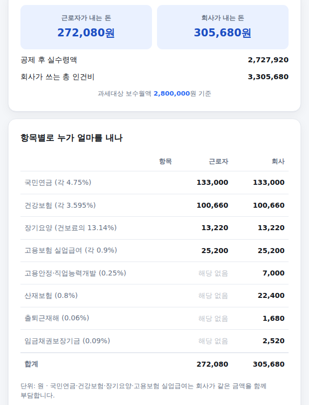

4대보험료는 근로자만 내는 게 아닙니다. 국민연금·건강보험은 회사가 같은 금액을 함께 내고, 산재보험은 아예 회사가 전액 부담합니다. 그래서 "내 월급에서 얼마가 빠지나"와 "회사가 나 한 명에게 얼마를 쓰나"는 전혀 다른 숫자입니다. 이 계산기는 그 둘을 나눠서 보여줍니다. 쓰는 법은 아래와 같습니다.
-
세전 월 급여와 비과세 금액 입력
연봉이 아니라 한 달 급여를 넣습니다. 250만/300만/400만/500만원 버튼을 눌러 대략 맞춰도 되고 직접 입력해도 됩니다.
아래 비과세 금액은 식대처럼 세금과 보험료가 붙지 않는 금액입니다. 식대는 월 20만원까지 비과세라 기본값을 20만원으로 두었습니다. 비과세 금액이 클수록 4대보험료도 함께 줄어듭니다.
월 급여·비과세 입력 화면
-
회사 규모 선택
고용보험 중 고용안정·직업능력개발사업 요율이 회사 규모에 따라 0.25%에서 0.85%까지 달라집니다. 이 항목은 근로자는 내지 않고 회사만 냅니다.
대부분의 중소기업은 150인 미만(0.25%)에 해당합니다. 우선지원대상기업은 업종별 상시근로자 수로 정해지는데, 제조업은 500인 이하, 광업·건설업·운수업 등은 300인 이하가 기준입니다.
회사 규모 선택 화면
-
업종 선택 — 산재보험 요율이 정해집니다
산재보험은 업종별로 요율이 크게 다릅니다. 사무직이 많은 금융·보험업은 0.5%인데, 건설업은 3.5%, 광업은 18.5%까지 올라갑니다. 위험도가 높은 일일수록 요율이 높습니다.
목록에 본인 업종이 없다면 직접 입력을 고르고 요율을 넣으시면 됩니다. 정확한 요율은 근로복지공단에서 보내는 고지서나 고용·산재보험 토탈서비스에서 확인할 수 있습니다.
업종 선택 화면
-
결과 확인 — 근로자 부담과 회사 부담
입력하는 즉시 위에 근로자가 내는 돈과 회사가 내는 돈이 나란히 나타나고, 그 아래에 공제 후 실수령액과 회사가 쓰는 총 인건비가 표시됩니다.
항목별 표에서는 8개 항목을 근로자·회사 두 칸으로 나눠 보여줍니다. "해당 없음"으로 흐리게 표시된 4개 항목이 회사만 부담하는 항목입니다.

결과 화면
회사만 내는 항목이 4개나 있습니다
많이들 "4대보험은 반반씩 낸다"고 알고 계시는데, 정확히 반반인 건 국민연금·건강보험·장기요양·고용보험 실업급여분까지입니다. 나머지 네 가지는 회사만 냅니다.
- 산재보험 — 업무 중 재해에 대비하는 보험이라 법적으로 전액 사업주 부담입니다. 2026년 평균 요율은 1.47%입니다.
- 고용안정·직업능력개발사업 — 고용보험 중 실업급여가 아닌 부분으로, 회사 규모에 따라 0.25%~0.85%입니다.
- 출퇴근재해 — 2018년부터 산재로 인정된 항목이며, 전 업종 동일하게 0.06%입니다.
- 임금채권보장기금 — 회사가 도산했을 때 밀린 임금을 대신 지급하기 위한 기금으로, 2026년부터 0.06%에서 0.09%로 올랐습니다.
고지서 금액과 원 단위가 다를 수 있습니다
4대보험료는 사업장 전체 인원의 보수를 합산해 부과되기 때문에, 개인 한 명 기준으로 나눠 계산하면 절사 처리 과정에서 몇 원 정도 차이가 날 수 있습니다. 또 산재보험은 과거 재해 이력에 따라 요율을 할인·할증하는 개별실적요율이 적용되는 사업장이 있어, 같은 업종이어도 실제 요율이 다를 수 있습니다.
계산은 참고용이며 노무·세무 조언이 아닙니다. 석면피해구제분담금 등 일부 사업장에만 적용되는 항목은 반영하지 않았습니다. 기준: 2026년 4대보험 요율(국민연금 9.5%·건강보험 7.19%·장기요양 13.14%·고용보험 실업급여 1.8%·산재보험 평균 1.47%).